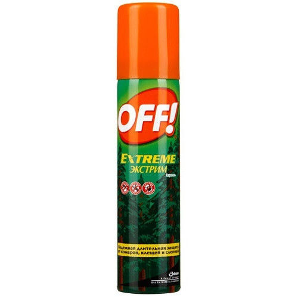
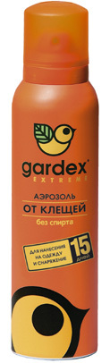
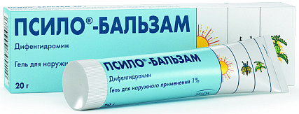

Вопрос профилактики. Так к примеру не указано что клеща надо снимать как можно раньше,чем меньше он сосет кровь,тем меньше в рану попадет его слюны и как итог возбудителя.
1. Само собой прививка от клещевого энцефалита лучшая профилактика от данного заболевания. Без неё нужно чем быстрее,тем лучше делать инъекцию специального иммуноглобулина но это дороже чем прививка,а еще его запросто может не быть в городе. Вообще. Так что прививка мастхев. И исходя из этого не факт что вообще имеет смысл нести клеща на исследование,результаты будут через несколько дней когда эффективность иммуноглобулина будет ниже,если вообще сроки профилактики уже не выйдут.
2. Профилактика боррелиоза по американским исследованиям выглядит так: Если клещ сосал кровь менее 24 часов,то профилактика не нужна ибо вероятность заразиться стремится к 0. Если более,то доказана крайне высокая эффективность единократного приема 200мг доксициклина (антибиотик такой) для взрослых, для детей старше 8 лет доза составляет 4 мг/кг массы тела до максимальной 200 мг. Эффективность на моей памяти более 70% против американских штаммов.
Теоретически доксициклин можно заменить на другой антибиотик (какой конкретно надо узнавать),но исследования проводились именно по нему. После приема надо все равно следить за местом укуса (гуглим симптомы боррелиоза),можно сдать кровь на анализ что бы прям быть совсем уверенным.
3. Так же клещи переносят такую неприятную хрень как гранулоцитарный анаплазмоз человека. Хрень это неприятна крайне смазанными симптомами которые похожи скорее на ОРЗ:
повышенная температура тела, появляется озноб, выраженная слабость, головные, мышечные боли, и другие симптомы, напоминающие острую фазу гриппа. Иногда присоединяется тошнота, рвота и боли в животе, тяжесть в правом подреберье, снижается артериальное давление и урежается сердцебиение. У одного из десяти больных наблюдается неспецифическая сыпь по телу. Большинство заболевших жалуются на боль в горле, першение и кашель. На рентгенограмме легких таких больных видны увеличенные бронхиальные лимфатические узлы, есть признаки бронхита или пневмонии. 80% пациентов имеют нарушения работы печени в виде безжелтушного гепатита.
Из-за чего данное заболевание было классифицировано лишь в 1991 году и даже сейчас вы можете проваляться в инфекционке месяц без точного диагноза. Единственное что позволяет заподозрить именно эту инфекцию это факт укуса клеща в течении месяца.
Не знаю насколько эффективен доксициклин как экстренная профилактика анаплазмоза,но в рамках лечения он эффективен.
4. Ну и самое главное не стоит забывать о всяких пшыкалках,одежде,осмотре себя и товарищей. Как житель Дальнего Востока который бурен на клещей и гнус (и где дальневосточный подтип клещевого энцефалита по некоторым годам убивал 40% заразившихся,в то время как в изнеженной Европе смертность не превышает 2-3%) чудесно знаю что у нас клеща можно принести погуляв по лесополосе вблизи поселка минут 15,а второй человек в группе правильно одетый и опрысканный будет чист. Закрытая одежда,штаны заправляются в обувь,куртка в брюки и тд. Длинные волосы убрать,на голову клещи не попадают (они редко на 60см забираются),но капюшон лучше одеть что бы просто гнус не сожрал. Хотя в Европах и Московиях гнуса как такового нету,там можно и без капюшона. На одежду очень хорошо идут комбинированные средства из реппелентов которые отпугивают и инсектицидов которые убивают,вроде москитола где есть одновременно и альфа-циперметрин который убивает и ДЭТА которая отпугивает. Работает чудесно,отгоняет и вездесущий гнус (ну как отгоняет,на Дальнем Востоке они просто кружатся вокруг тебя и изредка садятся,но не кусают). На открытые участки наносятся другие средства специально для кожи. А то есть лица которые пшыкают себе на кожу средствами только для одежды,а потом жалуются на жжение и красноту.
При этом клеща можно подцепить не только в лесу или даже парке,а к примеру в автобусе. Огородники там ездят,с них может запросто перелезть на вас. Случаи известны мне лично.
Почувствовать ползущего клеща почти невозможно. Лето,вы и так потный,по вам текут капельки пота,одежда мокрая,а клещ ползет очень-очень медленно. Вы скорее будете чувствовать стекающий пот чем клеща. Когда присосется уже возможно,но не факт. Поэтому после прогулок по лесополосе,даже недлительных,следует осмотреть себя,а лучше попросить осмотреть кого-то другого. Лучше близкого,потому что в идеале вы должны быть голым. Так я несколько лет назад во время такого осмотра снял с лопатки товарища еще ползущего клеща.
Немного добавлю про боррелиоз. Когда вам говорят, что клещи в "безопасных" регионах безопасны - вас обманывают. В мск в парках есть боррелиоз. Классический симптом - эритема в месте укуса. Но ее может и не быть.
Определяется при исследовании на антитела (сначала появляются IgM на начальной стадии). Потом появляются антитела IgG. Инфекционисты зачастую ничего не знают про эту болезнь и относятся расслабленно (в моем случае два из трех), тк резких и быстрых реакций организма нет. Но длинный прогноз дерьмоватый, можно погуглить самостоятельно. Поэтому надо серьезно относиться к прогулочкам в парках - пользуйтесь репеллентами и грамотно используйте одежду.
Все комментарии не прочитал, может и повторюсь, но! ОБЯЗАТЕЛЬНО после обнаружения на себе впившегося клеща выпить пару таблеток "Доксициклин" и потом 5-7 дней пропить курс этих таблеток!!!
Чем спасаемся?
Во-первых, тем, что запоминаем - мест, где клеща нет, в средней полосе попросту не существует. "Поймать" его можно и в московском Царицынском парке и во Владивостоке. Лучше всего об этом знают владельцы собак - осматривать псину на предмет клещей нужно после каждого выгула.
Во-вторых. Спреи против насекомых. Отдельные - для кожи, отдельные - для одежды и снаряжения.
Для кожи.
Отлично зарекомендовал себя спрей "OFF". Выглядит вот так:

Хорош тем, что отлично спасает помимо клеща еще и от комаров с мошкарой. Не оставляет "липкого" ощущения, не вызывает раздражения за исключением случая, когда у человека аллергия на данную конкретную "пшикалку". Наносить на все открытые участки тела - кисти рук, шею, лицо. На лицом можно не распылять, а "набрать" немного в ладони и растереть. Если на вас футболка и шорты - "пропшикиваются" все оголенные участки кожи вне зависимости от длины шорт и майки.
Для одежды и снаряжения.
Спрей "Gardex".

ВНИМАНИЕ! Бывает отдельный от комаров, отдельный от клещей и комплексный. Читайте упаковку. Минусы - обладает достаточно едким и резким запахом который, впрочем, быстро выветривается. Распыляется на обшлага рукавов, верхний край ботинок, воротник и низ куртки\майки\свитера, пояс штанов. То есть - на все "края" одежды.
При выходе с палатками им же желательно пробрызгать входы палаток по краю и горловину рюкзака.
Зачем такие параноидальные предосторожности?
Клещ - очень мерзкая штука. Когда он ползет по человеку - человек этого не чувствует, более того, перед укусом клещ способен проползать по человеку до суток. Или, наоборот, куснуть сразу же, как оказался на человеке. Укус тоже абсолютно безболезненен и не ощущается. Визуально же отличить "зараженного" клеща от "здорового" невозможно.
Так что вторая наша задача - даже при использовании всех спреев вместе взятых - это как можно быстрее найти цапнувшую тебя заразу.
Как кусают?
Немного страшилок из личного опыта. Один раз клещ укусил меня в верхнее веко правого глаза и сделал это моментально - секунду назад ветка куста хлестнула меня по лицу, еще через секунду я обнаружила новую, подозрительно шевелящуюся "ресничку". Впрочем, это скорее исключение)))
Как уже упоминалось, клещ любит сидеть на кустарниках, траве, невысоких деревьях. Держится он там слабо, и как только вы задеваете то, на чем он сидит, клещ падает-перецепляется на вас. Нет, слава богу прыгать они не умеют, но от этого не легче. Именно по этому чаще всего кусают человека, который идет по тропинке первым. Также клещ может заползать в палатки, на тенты и растяжки, откуда, опять-таки, перемещаться на вас.
Куда кусают и как обнаружить?
Излюбленные места клеща - это места, в которых крупные сосуды проходят близко к коже либо там, где теплее всего. Ключицы, шея, пах, сгибы локтей и коленей, запястья, подмышки, у женщин - под грудью, у всех без исключения - между ягодицами или около анального отверстия. Что бы обнаружить зверюгу как можно раньше - после приезда в город либо по вечерам (в многодневном выезде) внимательно осмотрите-ощупайте себя в вышеуказанных местах, ощупайте волосистую часть головы, попросите товарища осмотреть спину.
Что делать, когда нашли?
Не капать на клеща маслом, не сдавливать его, чтобы он не стал выдавливать свое содержимое в хоботок. Только выкручивать его чтобы не отвалилась голова. Пинцетом клеща не выдирать. Можно воспользоваться специальной клещедеркой, продается в магазине для живатных за небольшую сумму. Главное, чтобы ранке ничего не осталось, даже жала. Поэтому клеща надо осмотреть. Если нет жала - в травмпункт, чтоб там вытащили. Можно клеща попробовать вытащить ниткой. Ее надо подсунуть под ножки и сделать так, чтобы был один оборот вокруг хоботка.
Берем клеща и запихиваем в любую пустую бутылку и завинчиваем крышку. Не нужно пытаться раздавить его, утопить, заморозить дома в морозилке - уничтожить клеща можно только закинув его в костер, он умудряется выживать даже после стирки в машинке на 60 градусах (делали как-то эксперимент - живой, скотина).
После того, как клещ помещен в баночку - проходимся по месту укуса спиртом или перекисью, берем баночку и едем в травмопункт. Там проверят, не оставил ли клещ кусок себя внутри вас, заберут клеща и проверят, не заражен ли он чем-либо.
Если клеща вытащить невозможно - собираемся и едем в травмопункт. Там клеща извлекут, сделают анализы, успокоят вас и все будут счастливы.
О дополнительных превентивных мерах.
Можно перестраховаться заранее и начать делать вакцинацию против клещевого энцефалита. Где это можно сделать - узнаем в поликлинике. Вакцинацию можно провести бесплатно, либо заплатить за австрийскую вакцину - но лично я кололась и тем, и тем, и разницы не вижу. Ревакцинация проводится каждые два года, желательно - день в день либо с минимальным "разносом" с днем прошлой вакцинации. В принципе, если пропустите - тоже ничего страшного, но лучше не пропускать.
Всем хорошего лета - и поменьше клещей!
P.S. О комарах.
Слава Богу, в наших широтах комары ничем не болеют, так что доставляют только физические зудящие неудобства. Вышеуказанные спреи отлично спасают и от комаров тоже, а на случай, если вас все-таки укусили - от зуда отлично помогает вот такая вот мазь:

Стоит недорого, ею же, как понятно из картинок на упаковке, можно смазывать легкие солнечные ожоги и "укусы" крапивы. Зуд снимает моментально.
Надеюсь, информация кому-нибудь пригодится)